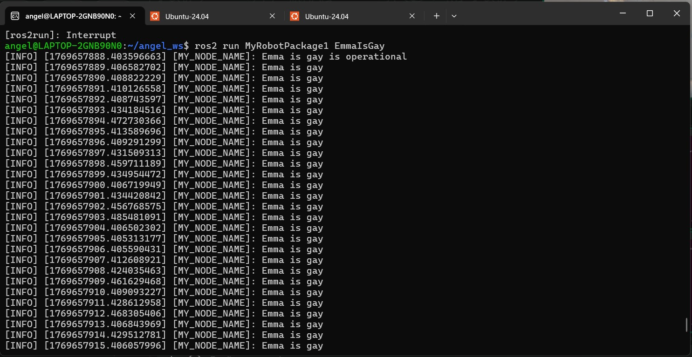
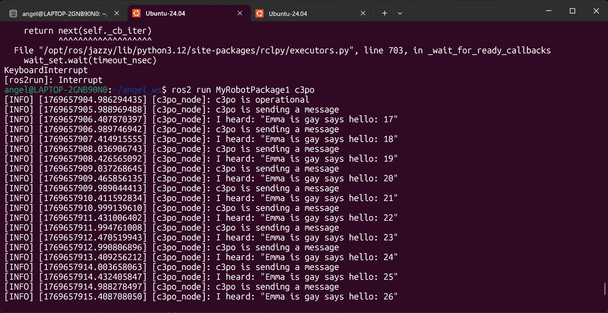
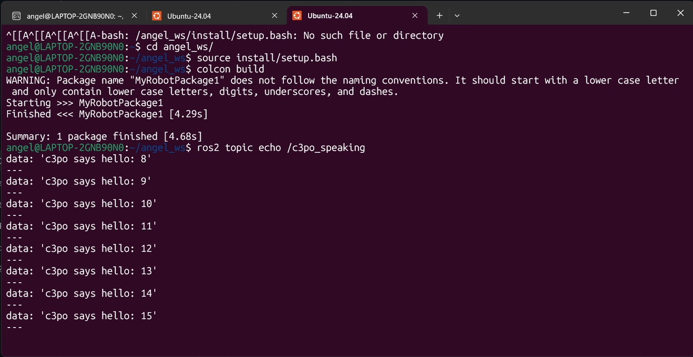
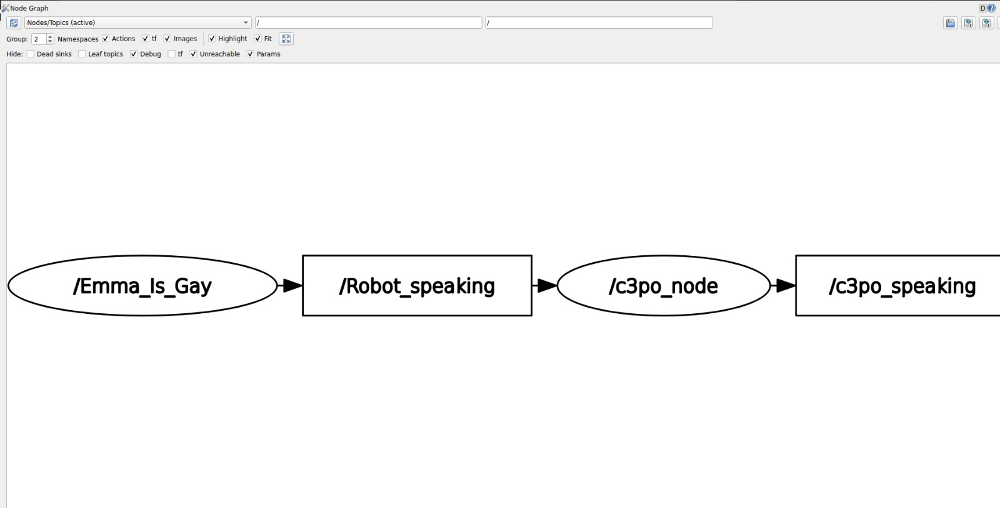

📚 Ros2 Topics
In this assigment I created 2 differente nodes with 2 different topics.
1) Summary
- Homework Name: Ros2 Topics
- Author: Angel Ivan Dominguez Cruz
- Subject: Applied Robotics
- Date: 29/01/2026
2) Objectives
- General: Implement and understand the basics of communication in ROS 2 by creating two nodes that interact via a publisher-subscriber model. The first node listens to messages published by the second node and responds by publishing its own messages.

3) First Code: Only Publisher
- Libraries: The code starts by importing the necessary libraries. It uses rclpy, which is the ROS 2 Python client, and Node from rclpy.node to create the ROS node. The String message type from example_interfaces.msg is imported to send and receive text messages.
class myNode_function(Node):
def __init__(self):
super().__init__('MY_NODE_NAME') #define the node's name
self.get_logger().info('Emma is gay is operational') #confirmation message
self.counter = 0
self.create_timer(1.0, self.print_callback) #each second timer
self.publishers_= self.create_publisher(String, 'Robot_speaking',10)#crear publisher
- Class Node: In this section, the class myNode_function is defined, which inherits from Node. This means the class represents a ROS 2 node. Inside the function, the node is initialized with the name MY_NODE_NAME and a log message is printed to indicate that the node is active. Additionally, a counter variable is initialized and a timer is set to trigger every second, calling the print_callback function each time. The publisher is also created here to send messages of type String on the Robot_speaking topic.
def print_callback(self):
self.get_logger().info('Emma is gay') #message that is going to be repeated on the timer
msg = String()
msg.data = 'Emma is gay says hello: %d' % self.counter
self.counter += 1
self.publishers_.publish(msg)
- Callback to Publish Messages: The print_callback function is called every second because of the timer set earlier. This function logs a message indicating that the node is about to send a message. It creates a new String message and assigns a text value to it, which includes the current value of the counter. The counter is then incremented, and the message is published to the Robot_speaking topic.
def main(args=None):
rclpy.init(args=args)
EmmaIsGayNode=myNode_function()
rclpy.spin(EmmaIsGayNode) #keeps going a program until someone stop it
rclpy.shutdown()
- Main Function: In the main function, rclpy.init() is called to initialize the ROS 2 client. A new instance of the node, EmmaIsGayNode, is created from the myNode_function class. The rclpy.spin() method keeps the node running, processing events until it is manually stopped. Finally, rclpy.shutdown() is called to shut down the ROS 2 client when the node stops.
-
Execution: The last block ensures that the main() function is executed when the script is run directly. If the script is imported as a module in another program, this section will not be executed.
-
Full Code:
#!/usr/bin/env python3 import rclpy from rclpy.node import Node from example_interfaces.msg import String class myNode_function(Node): def __init__(self): super().__init__('MY_NODE_NAME') #define the node's name self.get_logger().info('Emma is gay is operational') #confirmation message self.counter = 0 self.create_timer(1.0, self.print_callback) #each second timer self.publishers_= self.create_publisher(String, 'Robot_speaking',10)#crear publisher def print_callback(self): self.get_logger().info('Emma is gay') #message that is goning to be repeated on the timer msg = String() msg.data = 'Emma is gay says hello: %d' % self.counter self.counter +=1 self.publishers_.publish(msg) def main(args=None): rclpy.init(args=args) EmmaIsGayNode=myNode_function() rclpy.spin(EmmaIsGayNode) #keeps going a program until someone stop it rclpy.shutdown() if __name__=="__main__": main()
4) Second Code: Publisher and Subscriber
- Libraries: The code starts by importing the necessary libraries. It uses rclpy, which is the ROS 2 Python client, and Node from rclpy.node to create the ROS node. The String message type from example_interfaces.msg is imported to send and receive text messages.
class myNode_function(Node):
def __init__(self):
super().__init__('c3po_node') #define the node's name
self.suscriber_ = self.create_subscription(
String,'Robot_speaking',self.listener_callback,10) #create subscriber and link to the callback function
self.get_logger().info('c3po is operational') #confirmation message
self.counter = 0
self.create_timer(1.0, self.print_callback) #each second timer
self.publishers_= self.create_publisher(String, 'c3po_speaking',10)#crear publisher
- Class Node: In this section, the class myNode_function is defined, which inherits from Node. This means the class represents a ROS 2 node. The node is initialized with the name c3po_node. Inside the function, a subscriber is created to lsiten to the messages on the "Robot_speaking" topic, with the listener_callback method handling incoming messages. A log message is printed to indicate that the node is active and also initializes a counter, creates a timer that triggers the print_callback function every second, and sets up a publisher to send messages to the c3po_speaking topic.
- Subscriber Callback Function: The listener_callback function is called whenever a message is received on the Robot_speaking topic. The function logs the content of the received message, displaying it in the format "I heard: message_data". This allows the node to process and respond to the incoming messages.
def print_callback(self):
self.get_logger().info('c3po is sending a message') #message that is going to be repeated on the timer
msg = String()
msg.data = 'c3po says hello: %d' % self.counter
self.counter +=1
self.publishers_.publish(msg)
- Callback to Publish Messages: The print_callback function is called every second because of the timer set earlier. A new String message is created, and the message content is formatted to include the current value of the counter (incremented every second). Finally, the message is published to the c3po_speaking topic using the publisher.
def main(args=None):
rclpy.init(args=args)
c3po=myNode_function()
rclpy.spin(c3po) #keeps going a program until someone stop it
rclpy.shutdown()
- Main Function: In the main function, rclpy.init() is called to initialize the ROS 2 client. A new instance of the node, EmmaIsGayNode, is created from the myNode_function class. The rclpy.spin() method keeps the node running, processing events until it is manually stopped. Finally, rclpy.shutdown() is called to shut down the ROS 2 client when the node stops.
-
Execution: The last block ensures that the main() function is executed when the script is run directly. If the script is imported as a module in another program, this section will not be executed.
-
Full Code:
#!/usr/bin/env python3 import rclpy from rclpy.node import Node from example_interfaces.msg import String class myNode_function(Node): def __init__(self): super().__init__('c3po_node') #define the node's name self.suscriber_ = self.create_subscription( String,'Robot_speaking',self.listener_callback,10) #create subscriber and link to the callback function self.get_logger().info('c3po is operational') #confirmation message self.counter = 0 self.create_timer(1.0, self.print_callback) #each second timer self.publishers_= self.create_publisher(String, 'c3po_speaking',10)#crear publisher def listener_callback(self, msg: String): self.get_logger().info(f'I heard: "{msg.data}"') def print_callback(self): self.get_logger().info('c3po is sending a message') #message that is goning to be repeated on the timer msg = String() msg.data = 'c3po says hello: %d' % self.counter self.counter +=1 self.publishers_.publish(msg) def main(args=None): rclpy.init(args=args) c3po=myNode_function() rclpy.spin(c3po) #keeps going a program until someone stop it rclpy.shutdown() if __name__=="__main__": main()
5) Results
  
6) Conclusions
- General: This code demonstrates the fundamental concepts of communication in ROS 2 using a publisher-subscriber model. The c3po_node subscribes to messages from the Robot_speaking topic and logs any incoming data, while also publishing its own messages every second to the c3po_speaking topic, with a counter that increments with each message. The diagram of thise excercise is this one:
